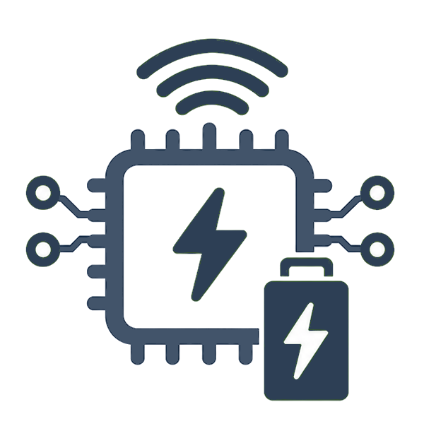

Energy-Efficient Connectivity
Minimizing Energy Usage of Circuits and Systems through smart and precise engineering
Reliable Connectivity
Maintaining stable, secured, and error-resistant communication across Systems
Integration with Diverse Technologies
Allowing coordination between multiple Systems through unified protocol and design